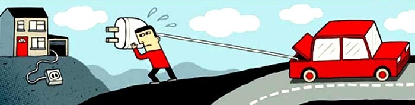
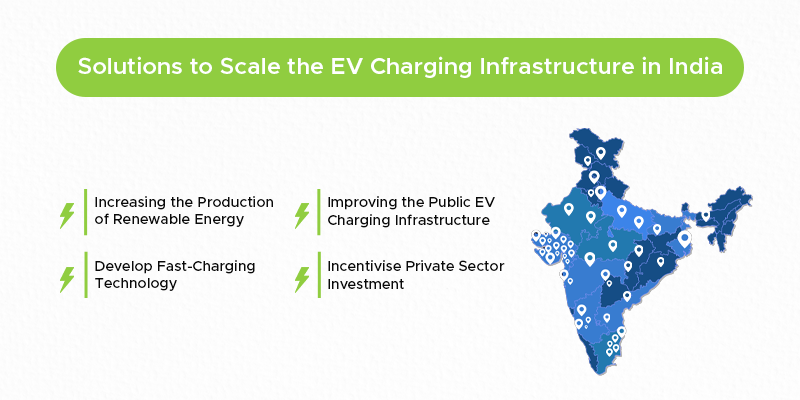

The rapid adoption of electric vehicles (EVs) is reshaping the automotive landscape, but with this shift comes a new phenomenon known as "charge rage." As more drivers transition to electric vehicles, the demand for charging infrastructure is outpacing supply, leading to frustration and conflict at charging stations.
This article delves into the implications of charge rage, its causes, and potential solutions to ensure a smoother EV charging experience.
Understanding Charge Rage
Charge rage refers to the anger and frustration that drivers experience while waiting for access to EV charging stations. As the number of electric vehicles on the road increases, so does the competition for limited charging points. Reports indicate that incidents of charge rage are becoming more common, with drivers arguing over whose turn it is to use a charger and, in some extreme cases, even unplugging other vehicles to charge their own.
In India, where the EV market is projected to grow significantly, the infrastructure has not kept pace with demand. For instance, the country aims to have 30% of all vehicles on the road be electric by 2030, but the current charging infrastructure is insufficient to support this goal. The lack of adequate charging stations, especially in urban areas, exacerbates the situation, leading to long wait times and heightened tensions among drivers.
Causes of Charge Rage
- Insufficient Charging Infrastructure: With only about 1,800 public charging stations available across India as of 2023, many EV owners face long waits to access a charger. This scarcity creates a competitive environment that can lead to frustration.
- Improper Use of Charging Stations: Some drivers leave their vehicles plugged in for extended periods, blocking chargers for others who need them. This behavior, often referred to as "charging camping," is a significant trigger for charge rage.
- Lack of Clear Guidelines: Many EV drivers are uncertain about the etiquette of using public chargers. Without established norms or guidelines, misunderstandings can lead to conflicts.
- Range Anxiety: As drivers worry about running out of battery power before reaching their destination, the urgency to access charging stations increases, contributing to aggressive behavior.

Solutions to Mitigate Charge Rage
- Increase Charging Infrastructure: The Indian government and private sector must prioritize the expansion of charging networks. This includes installing more fast chargers in urban areas and along highways to accommodate the growing number of EVs.
- Establish Charging Etiquette Guidelines: Developing a clear code of conduct for using public charging stations can help reduce misunderstandings. This could include guidelines on how long to charge, the importance of moving vehicles promptly after charging and respecting the queue.
- Implement Real-Time Availability Apps: Utilizing technology to provide real-time information about charger availability can help drivers plan their charging stops more effectively. Apps that show live data on charging station status can reduce wait times and frustration.
- Educate EV Owners: Awareness campaigns can educate new EV owners about proper charging etiquette and the importance of sharing resources fairly. This can foster a more cooperative environment among drivers.

Conclusion
As the electric vehicle revolution continues to gain momentum in India, addressing the issue of charge rage is essential for ensuring a positive driving experience. By expanding charging infrastructure, establishing clear guidelines, and leveraging technology, the industry can mitigate frustrations and enhance the overall EV ownership experience. As we move toward a more sustainable future, it is crucial to cultivate a culture of patience and cooperation among EV drivers to avoid a dystopian scenario of charge rage.